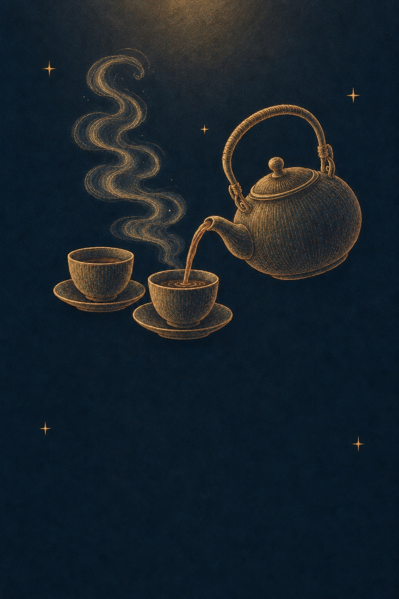
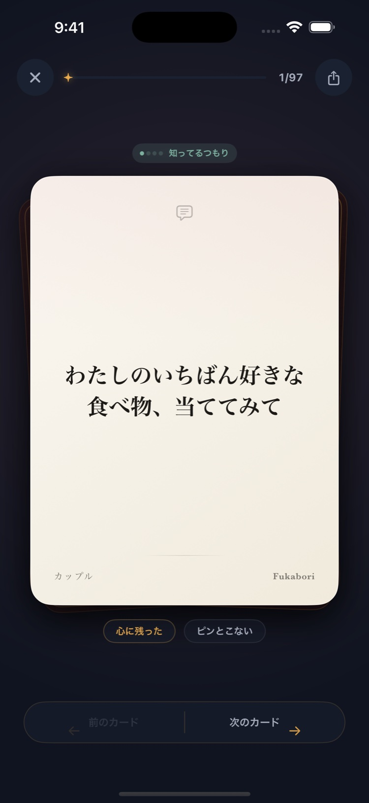

01 — THE FIRST QUESTION
はじまりは、
なんでもない話。
好きなものを、当ててみる。
そんな小さな遊びから、
いつもの会話が動きはじめる。

深い話を、ゲームみたいに。
SMALL TALK IS JUST THE BEGINNING.
今日なに食べる？ 次の休み、どうする？
そんな会話の、もう少し奥へ。
きっかけは、たった1枚のカード。
01 — THE FIRST QUESTION
好きなものを、当ててみる。
そんな小さな遊びから、
いつもの会話が動きはじめる。
02 — ANOTHER SIDE
同じ時間を過ごしていても、
見ている景色は少し違う。
「どうして？」の先を、聞いてみる。
03 — A LITTLE CLOSER
照れくさくて言えなかったこと。
自分でも、まだ言葉にしていなかったこと。
カードがあると、不思議と話せる。
わたしのいちばん好きな食べ物、当ててみて
fukabori ☽NO RIGHT ANSWERS. JUST YOURS.
話したくないことは、パスしていい。
ふたりのペースで、ふたりの深さまで。
CHOOSE YOUR CONNECTION
恋人も、友達も、家族も、自分も。
相手を選ぶと、問いが変わる。
カップル / 01
わたしのいちばん好きな食べ物、当ててみて
LESS SCROLLING. MORE TALKING.
画面の向こうを眺める時間から、
目の前の人を知る時間へ。

相手と気分に合わせて。
気になる一問を、声に出して。
答えから、会話を自由に。
THE NEXT STORY IS YOURS.
iPhone向け 会話カードアプリ